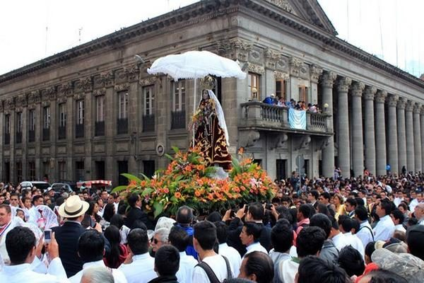

La fiesta patronal inicia el miércoles 26 de septiembre con la veneración dedicada a la bendición de los niños, de 8 a 17 horas en la Iglesia Catedral de Los Altos. El jueves 27, se realizará una solemne eucaristía a las 9 horas y a las 11 iniciará el cortejo procesional que recorrerá el contorno del Parque Central, con participación estudiantes de centros educativos. Del viernes 28 de septiembre al sábado 6 de octubre, se realizará el rezo del Santo Rosario a las 5, 14 y 18.30 horas. El 6, diferentes asociaciones, cofradías, e instituciones, le llevarán arreglos florales a la patrona por la tarde y noche, mientras que a las 23 horas se realizará una eucaristía. El 7 de octubre, día principal, se realizará una serenata con marimba a medianoche, y de 4 a 13 horas se llevarán a cabo eucaristías a cada hora. Los festejos culminan el 28 de octubre, con la procesión final que recorrerá el Parque Central.
